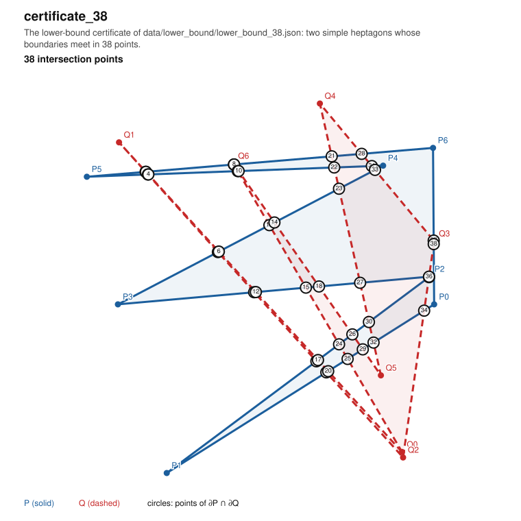
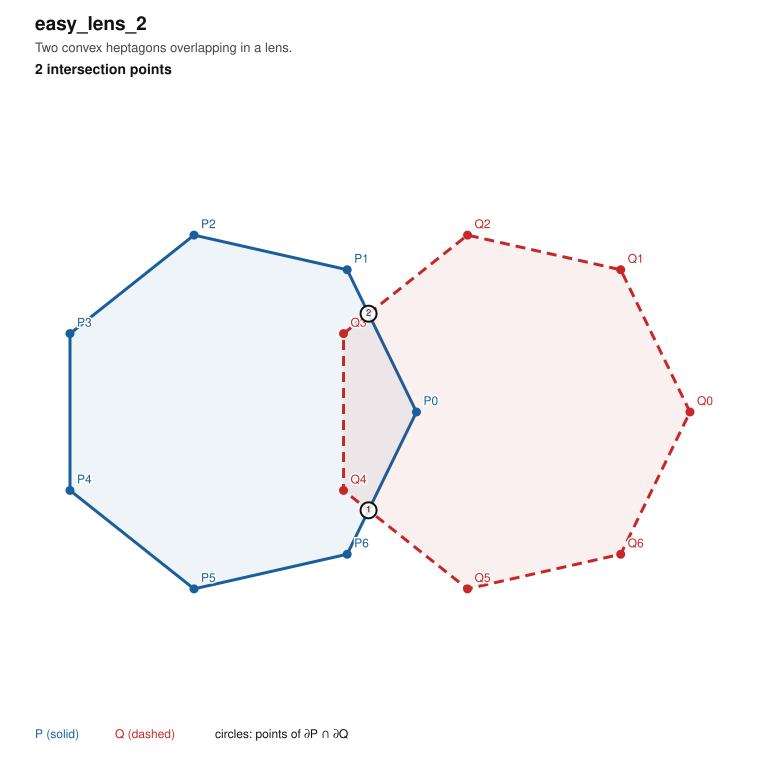
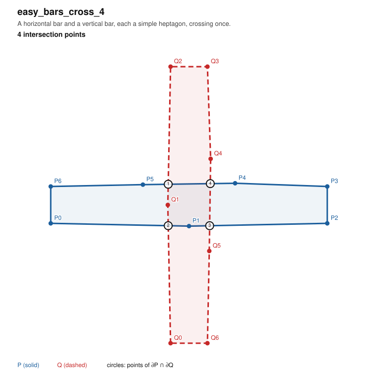
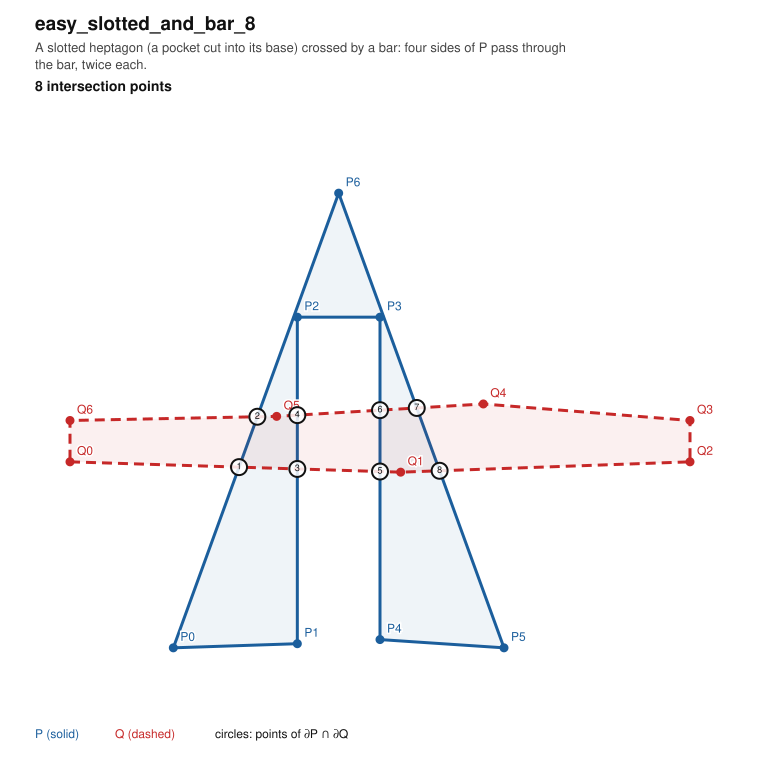
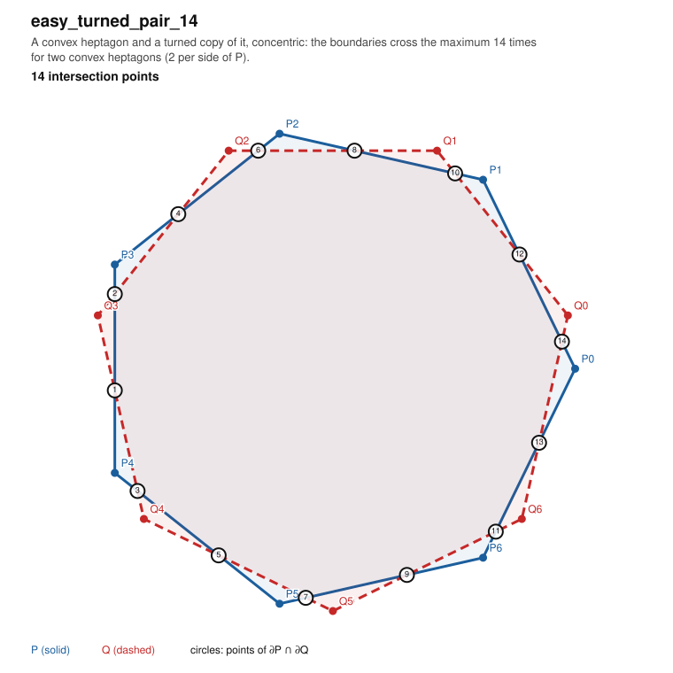
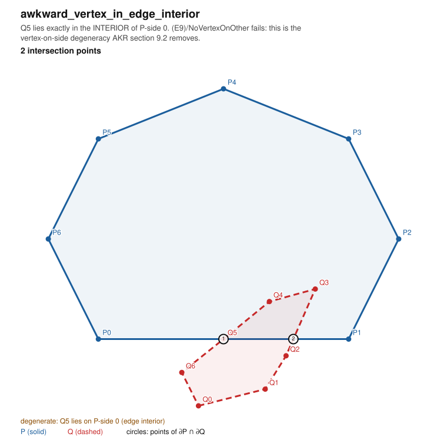
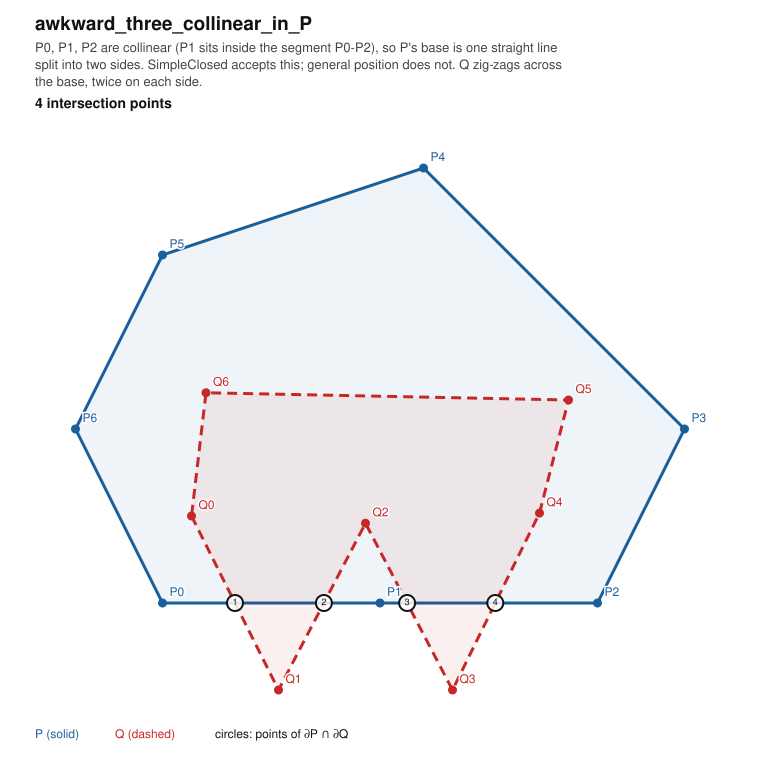
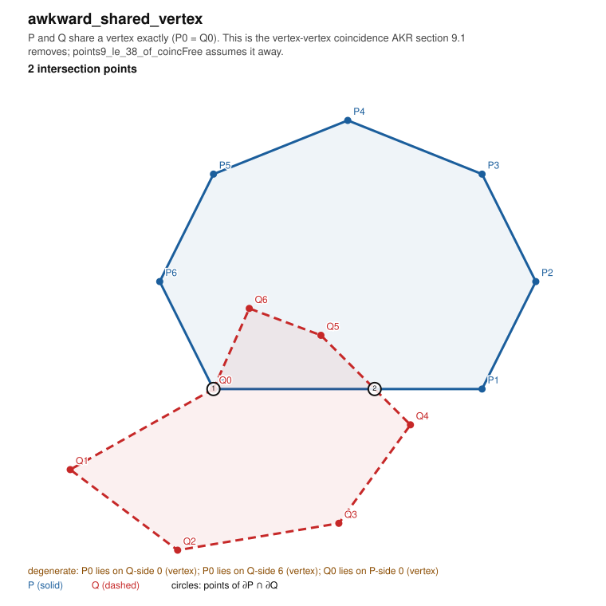
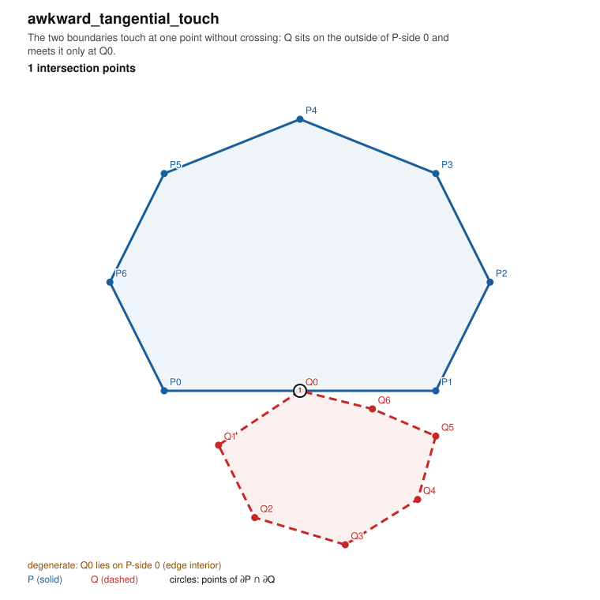

Generated by docs/audit/gallery.py. Counts are exact (fractions.Fraction).
certificate_38 — The lower-bound certificate of data/lower_bound/lower_bound_38.json: two simple heptagons whose boundaries meet in 38 points. points: 38

easy_lens_2 — Two convex heptagons overlapping in a lens. points: 2

easy_bars_cross_4 — A horizontal bar and a vertical bar, each a simple heptagon, crossing once. points: 4

easy_slotted_and_bar_8 — A slotted heptagon (a pocket cut into its base) crossed by a bar: four sides of P pass through the bar, twice each. points: 8

easy_turned_pair_14 — A convex heptagon and a turned copy of it, concentric: the boundaries cross the maximum 14 times for two convex heptagons (2 per side of P). points: 14

awkward_vertex_in_edge_interior — Q5 lies exactly in the INTERIOR of P-side 0. (E9)/NoVertexOnOther fails: this is the vertex-on-side degeneracy AKR section 9.2 removes. points: 2 (awkward case)

awkward_three_collinear_in_P — P0, P1, P2 are collinear (P1 sits inside the segment P0-P2), so P's base is one straight line split into two sides. SimpleClosed accepts this; general position does not. Q zig-zags across the base, twice on each side. points: 4 (awkward case)

awkward_shared_vertex — P and Q share a vertex exactly (P0 = Q0). This is the vertex-vertex coincidence AKR section 9.1 removes; points9_le_38_of_coincFree assumes it away. points: 2 (awkward case)

awkward_tangential_touch — The two boundaries touch at one point without crossing: Q sits on the outside of P-side 0 and meets it only at Q0. points: 1 (awkward case)

awkward_overlapping_sides_infinite — A P-side and a Q-side are collinear and overlap in a whole sub-segment, so the boundaries meet in infinitely many points. Must be FLAGGED, not counted. points: infinite (awkward case)